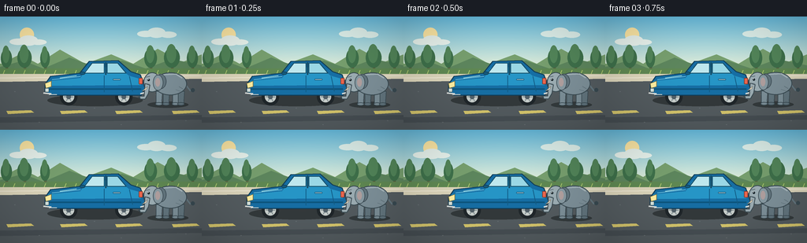
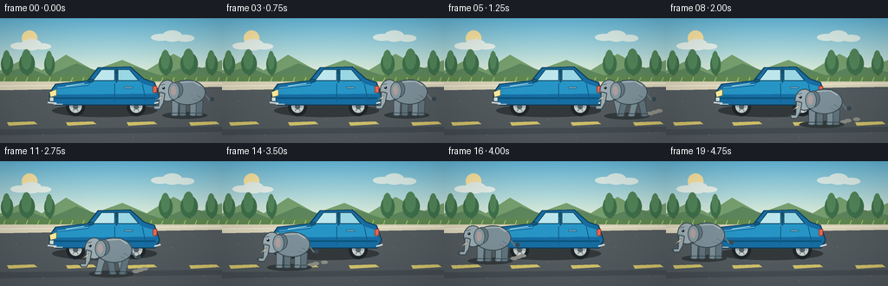

CODING AGENTS AS PIXEL WORLD MODELS
traex/GPT-5.6-Sol · dynamic_spatial_relationship_0067
点击播放 · 原生 RGB 像素
逐轮保存的候选
回放视频、检查图与代码变化。
每份候选均可单独播放。实际图片检查记录在下方工具轨迹中。
候选 01播放与检查图
点击播放 · 原生 RGB 像素


展开代码变化
--- 上一保存版本 +++ 本次保存版本 @@ -0,0 +1,234 @@ +from pathlib import Path +import math +import numpy as np +from PIL import Image, ImageDraw +import artifact_io + +W, H, N = 256, 144, 20 +S = 4 + + +def sc(v): + if isinstance(v, (tuple, list)): + return tuple(int(round(x * S)) for x in v) + return int(round(v * S)) + + +def ellipse(d, box, fill, outline=None, width=1): + d.ellipse(sc(box), fill=fill, outline=outline, width=sc(width) if outline else 1) + + +def rect(d, box, fill, outline=None, width=1, radius=0): + if radius: + d.rounded_rectangle(sc(box), radius=sc(radius), fill=fill, outline=outline, + width=sc(width) if outline else 1) + else: + d.rectangle(sc(box), fill=fill, outline=outline, + width=sc(width) if outline else 1) + + +def poly(d, pts, fill, outline=None, width=1): + d.polygon([sc(p) for p in pts], fill=fill) + if outline: + d.line([sc(p) for p in pts + [pts[0]]], fill=outline, width=sc(width), joint='curve') + + +def line(d, pts, fill, width=1): + d.line([sc(p) for p in pts], fill=fill, width=sc(width), joint='curve') + + +def make_background(): + a = np.empty((H*S, W*S, 3), dtype=np.uint8) + # Warm late-afternoon sky with a soft horizon glow. + for yy in range(H*S): + y = yy / S + if y < 60: + t = y / 60 + c0 = np.array([104, 190, 225.0]) + c1 = np.array([218, 235, 218.0]) + c = c0*(1-t) + c1*t + elif y < 73: + t = (y-60)/13 + c = np.array([110, 161, 91.0])*(1-t)+np.array([88, 136, 73.0])*t + else: + t = (y-73)/(H-73) + c = np.array([87, 96, 101.0])*(1-t)+np.array([55, 62, 67.0])*t + a[yy, :, :] = np.clip(c,0,255).astype(np.uint8) + im = Image.fromarray(a, 'RGB') + d = ImageDraw.Draw(im) + # Sun and clouds. + ellipse(d, (25, 14, 43, 32), '#ffe9a6') + for b in [(12,28,34,36),(24,24,48,37),(38,29,59,36)]: + ellipse(d,b,'#eaf5ef') + for b in [(174,18,196,26),(187,14,210,27),(203,19,224,27)]: + ellipse(d,b,'#dff1ec') + # Distant hills and tree line. + poly(d, [(0,61),(25,48),(48,60),(76,42),(108,60),(141,48),(169,60),(200,41),(231,58),(256,48),(256,73),(0,73)], '#78a06f') + poly(d, [(0,64),(29,56),(55,66),(88,52),(121,64),(155,56),(185,66),(218,54),(256,62),(256,75),(0,75)], '#5e875e') + # Shrubs/trees along the verge. + for x,r in [(8,7),(31,9),(57,6),(191,8),(218,10),(244,7)]: + rect(d,(x-1,52,x+2,70),'#5b5a3e') + ellipse(d,(x-r,45-r*.55,x+r,65),'#3f714b') + ellipse(d,(x-r*.7,42-r*.7,x+r*.55,59),'#53865a') + # Grass verge and curb. + rect(d,(0,66,256,77),'#608953') + for x in range(4,256,13): + line(d,[(x,73),(x+2,68)],'#acc66d',1) + poly(d,[(0,73),(256,73),(256,80),(0,84)],'#ded7bc') + line(d,[(0,78),(256,75)],'#f4eedb',1) + # Road texture and perspective lane markings. + poly(d,[(0,83),(256,79),(256,144),(0,144)],'#555d61') + # broad subtle road bands + poly(d,[(0,128),(256,125),(256,131),(0,135)],'#485055') + for x in [8,76,146,218]: + poly(d,[(x,120),(x+31,119),(x+35,122),(x+2,124)],'#d9c96e') + # small pebbles + for x,y in [(18,95),(49,134),(95,89),(153,137),(197,99),(235,132),(119,116),(221,86)]: + ellipse(d,(x,y,x+1.4,y+0.8),'#697175') + return im + +BG = make_background() + + +def draw_car(im): + d = ImageDraw.Draw(im) + # Car shadow. + ellipse(d,(60,99,181,114),'#343a3c') + # Wheels behind body. + for cx in (87,157): + ellipse(d,(cx-11,91,cx+11,113),'#20272b') + ellipse(d,(cx-7,95,cx+7,109),'#cbd2cf') + ellipse(d,(cx-3,99,cx+3,105),'#53616a') + for ang in range(0,360,60): + r1,r2=3,6 + a=math.radians(ang) + line(d,[(cx+math.cos(a)*r1,102+math.sin(a)*r1),(cx+math.cos(a)*r2,102+math.sin(a)*r2)],'#7b898d',1) + # Main left-facing body: low hood at left, taller trunk at right. + poly(d,[(57,86),(64,76),(101,72),(113,57),(150,56),(166,70),(178,74),(184,91),(179,100),(64,100),(57,95)],'#176fa5','#123f5b',1.2) + # Highlight and lower rocker. + poly(d,[(61,82),(102,78),(111,65),(151,64),(163,75),(177,79),(179,87),(62,88)],'#2796c7') + line(d,[(62,92),(179,92)],'#0d567f',2) + line(d,[(66,80),(102,76)],'#72cae7',1) + # Cabin glass; windshield slope points toward front (left). + poly(d,[(107,72),(117,59),(132,59),(132,72)],'#bfe8ee','#164e68',1) + poly(d,[(136,59),(149,59),(160,72),(136,72)],'#9bd8e6','#164e68',1) + line(d,[(134,58),(134,74)],'#174e68',2) + # Door seams and handle. + line(d,[(132,75),(132,96)],'#135d87',1) + line(d,[(164,76),(168,95)],'#135d87',1) + rect(d,(143,79,153,81),'#d3e4df','#0d5278',.7,1) + # Front details on LEFT, emphasizing orientation. + poly(d,[(57,85),(65,82),(65,89),(58,91)],'#fff0a3','#7f6b36',.7) + rect(d,(57,91,62,96),'#d7e4df','#29444f',.6,1) + line(d,[(62,99),(72,99)],'#d5dbd9',1) + # Rear tail lamp on right. + rect(d,(176,78,181,86),'#ed674f','#803529',.7,1) + # bumpers + line(d,[(55,97),(65,98)],'#d9dedc',2) + line(d,[(178,98),(185,96)],'#d9dedc',2) + # tiny side mirror near front windshield + ellipse(d,(101,70,108,74),'#145b80','#173f50',.7) + # Bright moving reflection stripe. + line(d,[(76,78),(97,75)],'#b8edee',1) + + +def elephant_pose(frame): + if frame <= 4: + # Hold unmistakably to the image-right of the car. + return 214.0, 111.0 + 0.35*math.sin(frame*1.3), 0.0 + if frame >= 18: + return 45.0, 111.0 + 0.25*math.sin(frame), 1.0 + t = (frame-4)/14.0 + # smoothstep progress along a curved route around the car's front/foreground. + u = t*t*(3-2*t) + x = 214*(1-u) + 45*u + # Step outward into foreground, then curve back toward the front bumper. + y = 111 + 18*math.sin(math.pi*u) + return x,y,u + + +def draw_dust(im, frame, x, ground, moving): + if not moving: return + d=ImageDraw.Draw(im) + # Dust trails behind the left-moving elephant. + phase=frame*0.9 + for j in range(3): + dx=22+j*7 + (phase+j*3)%5 + yy=ground-2-j*1.5 + ellipse(d,(x+dx-4,yy-2,x+dx+4,yy+2),'#90928a') + + +def draw_elephant(im, frame, x, gy, moving): + d = ImageDraw.Draw(im) + bob = (1.1*abs(math.sin(frame*math.pi/2))) if moving else .35*math.sin(frame*.8) + cy = gy - 25 - bob + outline='#394a52' + body='#7f929b' + light='#9eafb5' + dark='#647780' + # soft oval shadow scales a little in foreground. + ellipse(d,(x-27,gy-3,x+25,gy+5),'#353c3e') + # tail behind the body, with tuft. + line(d,[(x+20,cy-1),(x+27,cy+8),(x+30,cy+7)],dark,2) + ellipse(d,(x+28,cy+5,x+33,cy+10),outline) + # walking legs, separate articulated silhouettes. + stride = math.sin(frame*math.pi/2) if moving else 0 + legs=[(-12, stride*4),(-3,-stride*4),(9,-stride*4),(16,stride*4)] + for idx,(lx,off) in enumerate(legs): + # rear legs first, alternate darker for depth + col=dark if idx in (1,3) else body + hipy=cy+9 + footx=x+lx+off + poly(d,[(x+lx-4,hipy),(x+lx+4,hipy),(footx+3,gy),(footx-4,gy)],col,outline,.8) + ellipse(d,(footx-5,gy-2,footx+4,gy+2),col,outline,.7) + # large barrel body. + ellipse(d,(x-19,cy-15,x+23,cy+14),body,outline,1.1) + # soft back highlight. + line(d,[(x-10,cy-12),(x+9,cy-13),(x+17,cy-8)],'#a9b9be',1.4) + # Head at left, making the walking direction clear. + hx=x-19; hy=cy-2 + ellipse(d,(hx-13,hy-13,hx+9,hy+12),light,outline,1) + # Far ear then near ear. + ellipse(d,(hx+1,hy-11,hx+16,hy+8),dark,outline,.8) + ellipse(d,(hx-1,hy-10,hx+12,hy+10),'#899ca4',outline,.8) + ellipse(d,(hx+2,hy-6,hx+8,hy+5),'#b3a2a1') + # Forehead and long curling trunk. + # Thick trunk as tapered polygon from snout down, curving forward (left). + poly(d,[(hx-11,hy+1),(hx-5,hy+3),(hx-7,hy+14),(hx-11,hy+21),(hx-17,hy+21),(hx-18,hy+17),(hx-12,hy+17)],light,outline,.9) + line(d,[(hx-17,hy+20),(hx-20,hy+18)],outline,1.1) + # Tusks. + poly(d,[(hx-8,hy+5),(hx-15,hy+11),(hx-9,hy+8)],'#f5ead0','#827969',.5) + # Eye, brow, smile crease. + ellipse(d,(hx-8,hy-5,hx-5,hy-2),'#17242a') + ellipse(d,(hx-7.4,hy-4.7,hx-6.6,hy-3.9),'white') + line(d,[(hx-10,hy-7),(hx-5,hy-8)],outline,.8) + line(d,[(hx-10,hy+1),(hx-5,hy+2)],dark,.7) + # small body skin creases. + line(d,[(x+13,cy+3),(x+18,cy+6)],dark,.7) + line(d,[(x+9,cy+7),(x+15,cy+9)],dark,.7) + + +def generate(): + frames=[] + for i in range(N): + im=BG.copy() + x,gy,u=elephant_pose(i) + moving=(5 <= i <= 17) + # Car remains parked and stable; elephant travels in front of it in depth. + draw_car(im) + draw_dust(im,i,x,gy,moving) + draw_elephant(im,i,x,gy,moving) + # Gentle cinematic vignette. + arr=np.asarray(im).astype(np.float32) + yy,xx=np.mgrid[0:H*S,0:W*S] + nx=(xx-W*S/2)/(W*S/2); ny=(yy-H*S/2)/(H*S/2) + vig=np.clip(1-0.10*(nx*nx+ny*ny),.82,1)[...,None] + arr=np.clip(arr*vig,0,255).astype(np.uint8) + im=Image.fromarray(arr).resize((W,H),Image.Resampling.LANCZOS) + frames.append(np.asarray(im,dtype=np.uint8)) + return np.stack(frames) + + +if __name__ == '__main__': + out=generate() + artifact_io.save(out, Path(__file__).resolve().parent)
可观测工具轨迹
实际执行的命令与返回图片。
命令 1exit 0
/bin/bash -lc "ls -la && printf '\\n--- prompt.txt ---\\n' && cat prompt.txt && printf '\\n--- GENERATION_RULES.md ---\\n' && cat GENERATION_RULES.md && printf '\\n--- task_spec.json ---\\n' && cat task_spec.json"
命令 2exit 0
/bin/bash -lc "sed -n '1,240p' artifact_io.py && printf '\\n--- template excerpt ---\\n' && sed -n '1,180p' player_template.html"
命令 3exit 2
/bin/bash -lc "cat > generate.py <<'PY'
from pathlib import Path
import math
import numpy as np
from PIL import Image, ImageDraw
import artifact_io
W, H, N = 256, 144, 20
S = 4
def sc(v):
if isinstance(v, (tuple, list)):
return tuple(int(round(x * S)) for x in v)
return int(round(v * S))
def ellipse(d, box, fill, outline=None, width=1):
d.ellipse(sc(box), fill=fill, outline=outline, width=sc(width) if outline else 1)
def rect(d, box, fill, outline=None, width=1, radius=0):
if radius:
d.rounded_rectangle(sc(box), radius=sc(radius), fill=fill, outline=outline,
width=sc(width) if outline else 1)
else:
d.rectangle(sc(box), fill=fill, outline=outline,
width=sc(width) if outline else 1)
def poly(d, pts, fill, outline=None, width=1):
d.polygon([sc(p) for p in pts], fill=fill)
if outline:
d.line([sc(p) for p in pts + [pts[0]]], fill=outline, width=sc(width), joint='curve')
def line(d, pts, fill, width=1):
d.line([sc(p) for p in pts], fill=fill, width=sc(width), joint='curve')
def make_background():
im = Image.new('RGB', (W*S, H*S))
a = np.asarray(im)
# Warm late-afternoon sky with a soft horizon glow.
for yy in range(H*S):
y = yy / S
if y < 60:
t = y / 60
c0 = np.array([104, 190, 225.0])
c1 = np.array([218, 235, 218.0])
c = c0*(1-t) + c1*t
elif y < 73:
t = (y-60)/13
c = np.array([110, 161, 91.0])*(1-t)+np.array([88, 136, 73.0])*t
else:
t = (y-73)/(H-73)
c = np.array([87, 96, 101.0])*(1-t)+np.array([55, 62, 67.0])*t
a[yy, :, :] = np.clip(c,0,255).astype(np.uint8)
d = ImageDraw.Draw(im)
# Sun and clouds.
ellipse(d, (25, 14, 43, 32), '#ffe9a6')
for b in [(12,28,34,36),(24,24,48,37),(38,29,59,36)]:
ellipse(d,b,'#eaf5ef')
for b in [(174,18,196,26),(187,14,210,27),(203,19,224,27)]:
ellipse(d,b,'#dff1ec')
# Distant hills and tree line.
poly(d, [(0,61),(25,48),(48,60),(76,42),(108,60),(141,48),(169,60),(200,41),(231,58),(256,48),(256,73),(0,73)], '#78a06f')
poly(d, [(0,64),(29,56),(55,66),(88,52),(121,64),(155,56),(185,66),(218,54),(256,62),(256,75),(0,75)], '#5e875e')
# Shrubs/trees along the verge.
for x,r in [(8,7),(31,9),(57,6),(191,8),(218,10),(244,7)]:
rect(d,(x-1,52,x+2,70),'#5b5a3e')
ellipse(d,(x-r,45-r*.55,x+r,65),'#3f714b')
ellipse(d,(x-r*.7,42-r*.7,x+r*.55,59),'#53865a')
# Grass verge and curb.
rect(d,(0,66,256,77),'#608953')
for x in range(4,256,13):
line(d,[(x,73),(x+2,68)],'#acc66d',1)
poly(d,[(0,73),(256,73),(256,80),(0,84)],'#ded7bc')
line(d,[(0,78),(256,75)],'#f4eedb',1)
# Road texture and perspective lane markings.
poly(d,[(0,83),(256,79),(256,144),(0,144)],'#555d61')
# broad subtle road bands
poly(d,[(0,128),(256,125),(256,131),(0,135)],'#485055')
for x in [8,76,146,218]:
poly(d,[(x,120),(x+31,119),(x+35,122),(x+2,124)],'#d9c96e')
# small pebbles
for x,y in [(18,95),(49,134),(95,89),(153,137),(197,99),(235,132),(119,116),(221,86)]:
ellipse(d,(x,y,x+1.4,y+0.8),'#697175')
return im
BG = make_background()
def draw_car(im):
d = ImageDraw.Draw(im)
# Car shadow.
ellipse(d,(60,99,181,114),'#343a3c')
# Wheels behind body.
for cx in (87,157):
ellipse(d,(cx-11,91,cx+11,113),'#20272b')
ellipse(d,(cx-7,95,cx+7,109),'#cbd2cf')
ellipse(d,(cx-3,99,cx+3,105),'#53616a')
for ang in range(0,360,60):
r1,r2=3,6
a=math.radians(ang)
line(d,[(cx+math.cos(a)*r1,102+math.sin(a)*r1),(cx+math.cos(a)*r2,102+math.sin(a)*r2)],'#7b898d',1)
# Main left-facing body: low hood at left, taller trunk at right.
poly(d,[(57,86),(64,76),(101,72),(113,57),(150,56),(166,70),(178,74),(184,91),(179,100),(64,100),(57,95)],'#176fa5','#123f5b',1.2)
# Highlight and lower rocker.
poly(d,[(61,82),(102,78),(111,65),(151,64),(163,75),(177,79),(179,87),(62,88)],'#2796c7')
line(d,[(62,92),(179,92)],'#0d567f',2)
line(d,[(66,80),(102,76)],'#72cae7',1)
# Cabin glass; windshield slope points toward front (left).
poly(d,[(107,72),(117,59),(132,59),(132,72)],'#bfe8ee','#164e68',1)
poly(d,[(136,59),(149,59),(160,72),(136,72)],'#9bd8e6','#164e68',1)
line(d,[(134,58),(134,74)],'#174e68',2)
# Door seams and handle.
line(d,[(132,75),(132,96)],'#135d87',1)
line(d,[(164,76),(168,95)],'#135d87',1)
rect(d,(143,79,153,81),'#d3e4df','#0d5278',.7,1)
# Front details on LEFT, emphasizing orientation.
poly(d,[(57,85),(65,82),(65,89),(58,91)],'#fff0a3','#7f6b36',.7)
rect(d,(57,91,62,96),'#d7e4df','#29444f',.6,1)
line(d,[(62,99),(72,99)],'#d5dbd9',1)
# Rear tail lamp on right.
rect(d,(176,78,181,86),'#ed674f','#803529',.7,1)
# bumpers
line(d,[(55,97),(65,98)],'#d9dedc',2)
line(d,[(178,98),(185,96)],'#d9dedc',2)
# tiny side mirror near front windshield
ellipse(d,(101,70,108,74),'#145b80','#173f50',.7)
# Bright moving reflection stripe.
line(d,[(76,78),(97,75)],'#b8edee',1)
def elephant_pose(frame):
if frame <= 4:
# Hold unmistakably to the image-right of the car.
return 214.0, 111.0 + 0.35*math.sin(frame*1.3), 0.0
if frame >= 18:
return 45.0, 111.0 + 0.25*math.sin(frame), 1.0
t = (frame-4)/14.0
# smoothstep progress along a curved route around the car's front/foreground.
u = t*t*(3-2*t)
x = 214*(1-u) + 45*u
# Step outward into foreground, then curve back toward the front bumper.
y = 111 + 18*math.sin(math.pi*u)
return x,y,u
def draw_dust(im, frame, x, ground, moving):
if not moving: return
d=ImageDraw.Draw(im)
# Dust trails behind the left-moving elephant.
phase=frame*0.9
for j in range(3):
dx=22+j*7 + (phase+j*3)%5
yy=ground-2-j*1.5
ellipse(d,(x+dx-4,yy-2,x+dx+4,yy+2),'#90928a')
def draw_elephant(im, frame, x, gy, moving):
d = ImageDraw.Draw(im)
bob = (1.1*abs(math.sin(frame*math.pi/2))) if moving else .35*math.sin(frame*.8)
cy = gy - 25 - bob
outline='#394a52'
body='#7f929b'
light='#9eafb5'
dark='#647780'
# soft oval shadow scales a little in foreground.
ellipse(d,(x-27,gy-3,x+25,gy+5),'#353c3e')
# tail behind the body, with tuft.
line(d,[(x+20,cy-1),(x+27,cy+8),(x+30,cy+7)],dark,2)
ellipse(d,(x+28,cy+5,x+33,cy+10),outline)
# walking legs, separate articulated silhouettes.
stride = math.sin(frame*math.pi/2) if moving else 0
legs=[(-12, stride*4),(-3,-stride*4),(9,-stride*4),(16,stride*4)]
for idx,(lx,off) in enumerate(legs):
# rear legs first, alternate darker for depth
col=dark if idx in (1,3) else body
hipy=cy+9
footx=x+lx+off
poly(d,[(x+lx-4,hipy),(x+lx+4,hipy),(footx+3,gy),(footx-4,gy)],col,outline,.8)
ellipse(d,(footx-5,gy-2,footx+4,gy+2),col,outline,.7)
# large barrel body.
ellipse(d,(x-19,cy-15,x+23,cy+14),body,outline,1.1)
# soft back highlight.
line(d,[(x-10,cy-12),(x+9,cy-13),(x+17,cy-8)],'#a9b9be',1.4)
# Head at left, making the walking direction clear.
hx=x-19; hy=cy-2
ellipse(d,(hx-13,hy-13,hx+9,hy+12),light,outline,1)
# Far ear then near ear.
ellipse(d,(hx+1,hy-11,hx+16,hy+8),dark,outline,.8)
ellipse(d,(hx-1,hy-10,hx+12,hy+10),'#899ca4',outline,.8)
ellipse(d,(hx+2,hy-6,hx+8,hy+5),'#b3a2a1')
# Forehead and long curling trunk.
# Thick trunk as tapered polygon from snout down, curving forward (left).
poly(d,[(hx-11,hy+1),(hx-5,hy+3),(hx-7,hy+14),(hx-11,hy+21),(hx-17,hy+21),(hx-18,hy+17),(hx-12,hy+17)],light,outline,.9)
line(d,[(hx-17,hy+20),(hx-20,hy+18)],outline,1.1)
# Tusks.
poly(d,[(hx-8,hy+5),(hx-15,hy+11),(hx-9,hy+8)],'#f5ead0','#827969',.5)
# Eye, brow, smile crease.
ellipse(d,(hx-8,hy-5,hx-5,hy-2),'#17242a')
ellipse(d,(hx-7.4,hy-4.7,hx-6.6,hy-3.9),'white')
line(d,[(hx-10,hy-7),(hx-5,hy-8)],outline,.8)
line(d,[(hx-10,hy+1),(hx-5,hy+2)],dark,.7)
# small body skin creases.
line(d,[(x+13,cy+3),(x+18,cy+6)],dark,.7)
line(d,[(x+9,cy+7),(x+15,cy+9)],dark,.7)
def generate():
frames=[]
for i in range(N):
im=BG.copy()
x,gy,u=elephant_pose(i)
moving=(5 <= i <= 17)
# Car remains parked and stable; elephant travels in front of it in depth.
draw_car(im)
draw_dust(im,i,x,gy,moving)
draw_elephant(im,i,x,gy,moving)
# Gentle cinematic vignette.
arr=np.asarray(im).astype(np.float32)
yy,xx=np.mgrid[0:H*S,0:W*S]
nx=(xx-W*S/2)/(W*S/2); ny=(yy-H*S/2)/(H*S/2)
vig=np.clip(1-0.10*(nx*nx+ny*ny),.82,1)[...,None]
arr=np.clip(arr*vig,0,255).astype(np.uint8)
im=Image.fromarray(arr).resize((W,H),Image.Resampling.LANCZOS)
frames.append(np.asarray(im,dtype=np.uint8))
return np.stack(frames)
if __name__ == '__main__':
out=generate()
artifact_io.save(out, Path(__file__).resolve().parent)
PY
python generate.py
ls -lh pixels.npz inspection.png frames/00.png frames/19.png index.html"命令 4exit 0
/bin/bash -lc "python - <<'PY'
p='generate.py'
s=open(p).read()
s=s.replace(\" im = Image.new('RGB', (W*S, H*S))\\n a = np.asarray(im)\\n\", \" a = np.empty((H*S, W*S, 3), dtype=np.uint8)\\n\")
s=s.replace(\" d = ImageDraw.Draw(im)\\n # Sun and clouds.\\n\", \" im = Image.fromarray(a, 'RGB')\\n d = ImageDraw.Draw(im)\\n # Sun and clouds.\\n\")
open(p,'w').write(s)
PY
python generate.py
python - <<'PY'
import numpy as np
from PIL import Image
z=np.load('pixels.npz')['pixels']
print('pixels',z.shape,z.dtype,'frames',len(list(__import__('pathlib').Path('frames').glob('*.png'))))
print('first-last differing pixels',np.count_nonzero(z[:,:,0]"'!=z[:,:,-1]))
print('"'frame modes/sizes', Image.open('frames/00.png').mode, Image.open('frames/00.png').size)
PY
ls -lh pixels.npz inspection.png transition_check.png frames/00.png frames/19.png index.html"视觉工具实际返回图片 1

保存候选 1 份；完成命令 4 次；可验证图片返回 1 张。原始 API 响应与完整日志保留在本地。